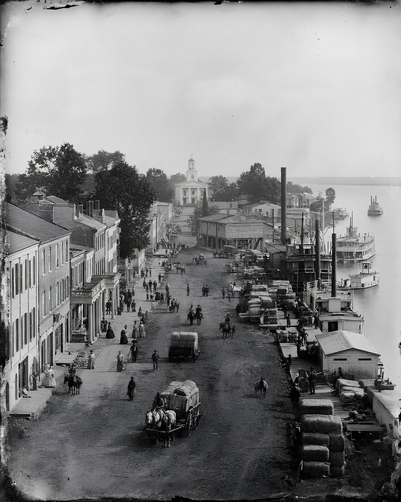

In 1819, Governor William Wyatt Bibb persuaded Alabama's territorial assembly to plant the brand-new state's capital at the spot where the Cahaba River empties into the Alabama River. The town of Cahawba was laid out on a neat Philadelphia-style grid, and from 1820 to 1825 it served as Alabama's first state capital. It didn't last. Flooding and disease convinced lawmakers to move the capital to Tuscaloosa in 1826, and many of Cahawba's residents followed. The town found new life as a cotton boomtown through the 1840s and 50s, then during the Civil War held thousands of Union prisoners at the Castle Morgan prison camp. Floods, war, and the loss of rail traffic wore the town down until, by 1900, it was a ghost town. Today the site is preserved as Old Cahawba Archaeological Park, cared for by the Alabama Historical Commission.
The river that gave the old capital its name is the same one that gives our own Cahaba River Colony its name. The Cahaba rises near Trussville and runs the length of the Birmingham metro - through Irondale, Birmingham, Vestavia Hills, Hoover, and Helena - before finally reaching the Alabama River at the site of Old Cahawba. Chartered on February 18, 2016, Cahaba River Colony sits along the same water, upstream from where Alabama's first capital once stood.
Almost exactly two hundred years after the Mayflower reached Plymouth in 1620, Alabama planted its first capital at the mouth of this river. Whether that timing meant anything to Cahawba's founders isn't part of the record we've found so far, and no documented Mayflower ancestry has turned up yet for Governor Bibb or Cahawba's other early residents. What's certain is the river itself, still running from the heart of our colony's territory down to the ground where the state began. If any of our members know more of the story behind the name - a family thread, a piece of history we haven't found yet - we'd love to hear it and add it here.